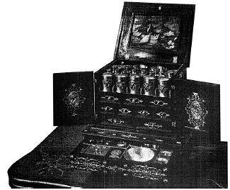

ŞEKİL 78. Abanozdan sandık şeklinde yapılmış ve üzeri zengin gümüş kaplamalarla bezeli, 17. yüzyıl başı Augsburg ev ya da gezi ecza sandığı: İçinde çok sayıda gümüş ve altın kaplama eczacılık alet ve kapları bulunmakta; yan kapakların iç yüzlerinde uyanıklılığın ve tedbirliliğin simgeleri olarak gümüş işlemeli horoz ve baykuşun kabartma madalyonları, üst kapak iç yüzeyinde ise bakır üzeri boyalı manzara resmi bulunmaktadır (Museum für Kunsthandwerk, Frankfurt/M).37